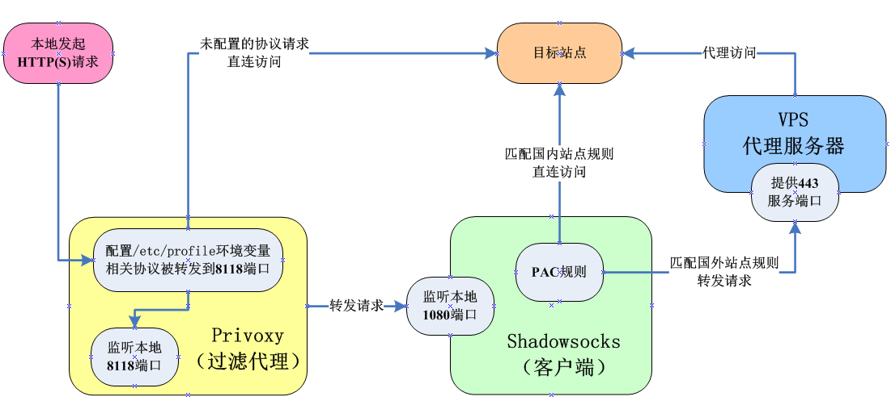
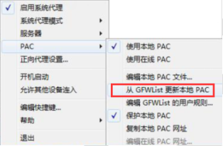

1. 前言
首先声明本文是 基于Centos7环境 下搭建 Shadowsocks客户端 （而非服务端），换而言之，你首先得有一台VPS服务器（网上很容易买得到，不贵，其搭建教程网上也有很多，例如：《ubuntu18.0.4搭建ss服务器》）。
1.1. 关于Shadowsocks
由于工作需要经常需要访问国外网站，而国内VPN被锁的今天，剩下较好的途径就是通过VPS进行代理了。而其中最出色的就要数Shadowsocks了。
Shadowsocks提供了全局和PAC（Proxy auto-config）两种代理模式，PAC的支持使得我们可以自定代理规则，决定哪些是国内IP只需直连、哪些是国外IP要走代理，不但效率比全局高，还能节省VPS流量。
Shadowsocks的官方Github：https://github.com/shadowsocks
1.2. 关于Privoxy
privoxy也是一个代理服务器，之所以要安装它，是因为Shadowsocks 只是一个socket5服务，不能直接用于网页访问，其主要作用是搭建与VPS之间的桥梁和实现PAC筛选规则。
而privoxy则可以弥补网页访问的问题，把socket5的流量转到 http / https上。
1.3. 代理服务架构
在开始搭建代理服务之前，先看一下我们最终要实现的代理服务架构示意图，有利于理解代理流程，便于进行后续变更操作：

2. 安装Shadowsocks客户端
Shadowsocks需要使用pip命令安装，因此首先安装epel源和pip包管理：
yum -y install epel-release
yum -y install python-pip安装Shadowsocks客户端：
pip install shadowsocks
安装成功后，Shadowsocks的启动脚本位置在：
/usr/bin/sslocal
3. 配置VPS服务器连接信息
新建Shadowsocks配置文件（默认是不存在的）：
> mkdir /etc/shadowsocks
> vi /etc/shadowsocks/shadowsocks.json设置VPS服务器的配置信息如下（请提前购置VPS服务器，本文不提供）：
{
"server": "x.x.x.x", # Shadowsocks服务器地址（根据实际修改）
"server_port": 443, # Shadowsocks服务器端口（根据实际修改）
"local_address": "127.0.0.1", # 本地IP
"local_port": 1080, # 本地端口（默认为1080，下面多处用到，建议不修改）
"password": "xxxxxxxx", # Shadowsocks连接密码（根据实际修改）
"timeout": 300, # 等待超时时间
"method": "aes-256-cfb", # 加密方式（根据实际修改）
"workers": 1, #工作线程数
"fast_open": false # true或false。不建议开启，开启可以降低延迟，但要求Linux内核在3.7+以上，若开启后访问网站出现502错误，请关闭。
}顺便一提，查看linux内核信息的指令为：
uname -r
4. 配置Shadowsocks的启动服务
新建启动脚本文件：
vi /etc/systemd/system/shadowsocks.service
设置内容如下：
[Unit]
Description=Shadowsocks
[Service]
TimeoutStartSec=0
ExecStart=/usr/bin/sslocal -c /etc/shadowsocks/shadowsocks.json
[Install]
WantedBy=multi-user.target
设置为开机自启动：
systemctl enable shadowsocks.service
启动Shadowsocks服务：
systemctl start shadowsocks.service
查看Shadowsocks服务状态（可查看代理日志）：
systemctl status shadowsocks.service
若启动失败提示，且提示 【error:[Errno 98] Address already in use】，说明1080代理端口被占用，可通过此命令查看是哪个进程占用了1080端口，把它kill掉（或改修改代理端口也可）：
lsof -i:8080
验证Shadowsocks客户端服务是否正常运行：
curl –socks5 127.0.0.1:1080 http://httpbin.org/ip
若Shadowsock客户端服务已正常运行，会返回VPS服务器的IP：
{
"origin": "x.x.x.x" # 前面设置的VPS服务器IP
}至此Shadowsocks安装完成，但是代理是未能生效的，原因是Shadowsocks 只是一个 socket5 服务，我们需要再安装一个privoxy代理服务器，利用privoxy把流量转到 http / https上。
5. 安装privoxy代理服务器
安装privoxy，直接安装即可：
yum install privoxy -y
6. 配置privoxy监听和转发端口
privoxy的配置文件默认为：
/etc/privoxy/config
默认情况下无需修改，主要关注配置文件中的两处：
listen-address 127.0.0.1:8118 # 8118 是privoxy的默认监听端口，一般不用改
forward-socks5t / 127.0.0.1:1080 . # 转发到Shadowsocks的代理端口，注意最后有个点
7. 设置http / https代理
privoxy是通过读取系统环境变量进行代理转发的，修改Centos的系统环境变量配置文件：
vi /etc/profile
在配置文件最后添加如下系统环境变量（全局代理和FTP代理可按需配置）：
PROXY_HOST=127.0.0.1
export all_proxy=http://$PROXY_HOST:8118 # 全局代理
export ftp_proxy=http://$PROXY_HOST:8118 # FTP代理
export http_proxy=http://$PROXY_HOST:8118 # HTTP代理
export https_proxy=http://$PROXY_HOST:8118 # HTTPS代理
export no_proxy=localhost,172.16.0.0/16,192.168.0.0/16.,127.0.0.1,10.10.0.0/16 # 不代理本地请求重载系统环境变量：
source /etc/profile
通过env命令可打印当前的所有系统环境变量，确认是否已正确添加：
env
8. 启动privoxy代理服务
设置为开机自启动：
systemctl enable privoxy
启动privoxy服务：
systemctl start privoxy
查看privoxy服务状态（可查看代理日志）：
systemctl status privoxy
至此privoxy安装完成，全部代理配置完成，可以开始访问外网了。
9. 测试代理访问外网
通过以下命令访问Google主页，若返回HTTP 200状态码则访问成功：
curl -I www.google.com
10. 取消代理
10.1. 临时取消代理
从代理服务架构图可知，本地需要走代理的请求，都先通过privoxy做协议筛选，再转发到Shadowsocks的。而privoxy筛选的依据就是我们在 /etc/profile 中所配置的系统环境变量。
因此可以通过unset命令删除包含关键字proxy的系统环境变量（前面新增的5个系统环境变量均含有关键字proxy）：
while read var; do unset $var; done < <(env | grep -i proxy | awk -F= '{print $1}')
由于unset命令只是删除当前会话的环境变量，所以这只是临时取消的方法，只要重新连接Centos会话就可恢复代理。
另外重载系统环境变量也可实现恢复代理：
source /etc/profile
10.2. 永久取消代理
要彻底取消代理，可修改系统环境变量的配置文件 /etc/profile ，把前面添加的5个proxy变量注释掉即可：
# PROXY_HOST=127.0.0.1
# export all_proxy=http://$PROXY_HOST:8118 # 全局代理
# export ftp_proxy=http://$PROXY_HOST:8118 # FTP代理
# export http_proxy=http://$PROXY_HOST:8118 # HTTP代理
# export https_proxy=http://$PROXY_HOST:8118 # HTTPS代理
# export no_proxy=localhost,172.16.0.0/16,192.168.0.0/16.,127.0.0.1,10.10.0.0/16 # 不代理本地当然，为了节省资源，你可以进一步地停止Shadowsocks和privoxy服务：
systemctl disable shadowsocks.service
systemctl stop shadowsocks.service
systemctl disable privoxy
systemctl stop privoxy附：关于PAC规则
使用Shadowsocks最大的特色就是可以使用PAC规则自动筛选国内外站点是否需要代理。在Windows下是很容易实现这个需求的：

在Linux下可以通过安装GenPAC在GFWList上获取PAC文件，但是似乎只能在VPS服务器上进行配置，而无法在Shadowsocks客户端中配置（至少目前我还没找到配置方法，以后我若找到方法会分享出来）。